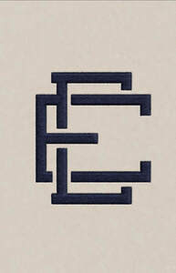

Trade Mark Journal No.2026/005 30 January 2026
UK00004318517 2 January 2026 (24,25,35,42)

- Class 24
- Textile goods for use as bedding; Textile fabrics for use in the manufacture of bedding; Towels of textiles; Linen; Textiles made of linen; Woven linen fabrics; Linen [fabric]; Textile fabrics for use in the manufacture of towels; Silk fabrics for furniture; Bed linen and blankets; Textile fabrics for use in the manufacture of beds; Linens; Tablecloths of textiles; Bed linen made of non-woven textile material; Bedroom textile fabrics; Bed linen; Linen for the bed; Linen (Bed -); Textiles; Textile fabrics for making into linens; Bed linen and table linen; Textile fabrics for use in the manufacture of furniture; Textile fabrics; Textile fabrics for the manufacture of clothing; Textile fabrics for lingerie; Silk fabrics; Comforters (bedding); Canopies (bed linen); Silk bed blankets; Textiles made of cotton; Towels made of textile materials; Patterned textiles for use in embroidery; Textiles and substitutes for textiles; Textile covers for duvets; Cotton blankets; Household linens; Textile fabric; Jersey fabrics for clothing; Bed clothes; Bed clothes and blankets; Lingerie fabrics; Apparel fabrics; Bath linen, except clothing; Fabric linings for clothing; Lingerie fabric; Fabric for use in the manufacture of clothing.
- Class 25
- Linen clothing; Silk clothing; Sleepwear; Pyjamas; Knitwear [clothing]; Nightwear; Clothing; Playsuits [clothing]; Shorts [clothing]; Clothing layettes; Denims [clothing]; Clothes; Corsets [clothing, foundation garments]; Capes (clothing); Men's clothing; Undergarments; Nightgowns; Clothing for infants; Baby layettes for clothing; Clothing for children; Underclothes; Loungewear; Leisure clothing; Nightdresses.
- Class 35
- Online retail store services in relation to clothing; Online retail store services relating to clothing.
- Class 42
- Services of a graphic designer; Fashion design; Design of clothing; Design of fashion accessories; Furniture design; Shop design; Design of clothing accessories; Graphic art design; Design of clothing, footwear and headgear; Textile design services; Brand design services; surface pattern design; fabric design and development; textile planning and consultancy services; colour, material and trend planning; design consultancy relating to textiles and fabrics; creative design services for the textile and fashion industries.
JONIIP Ltd